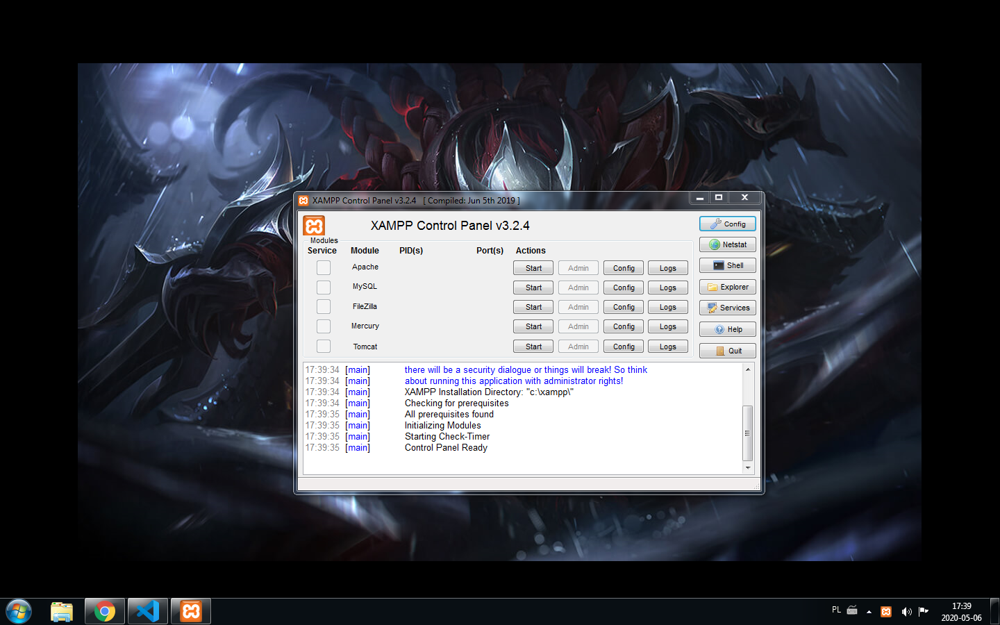

XAMPP – darmowy, wieloplatformowy, zintegrowany pakiet,
składający się głównie z serwera Apache, bazy danych MySQL i interpreterów dla skryptów napisanych w PHP i Perlu.
Nazwa XAMPP jest akronimem od X (ang. cross-platform), Apache, MySQL, PHP, Perl.
Twórca strony: © Andrzej Stefaniuk